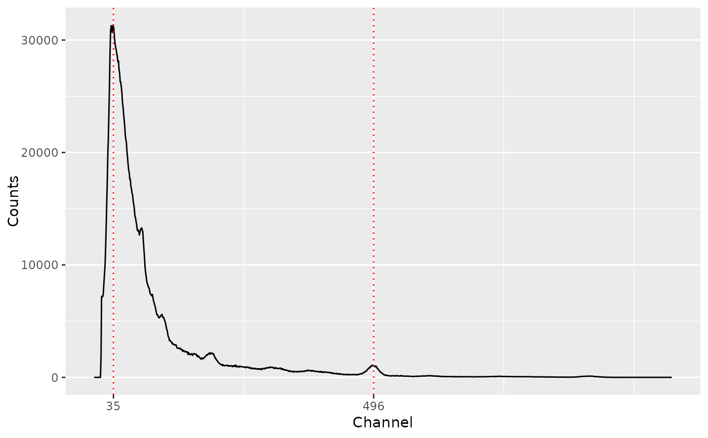
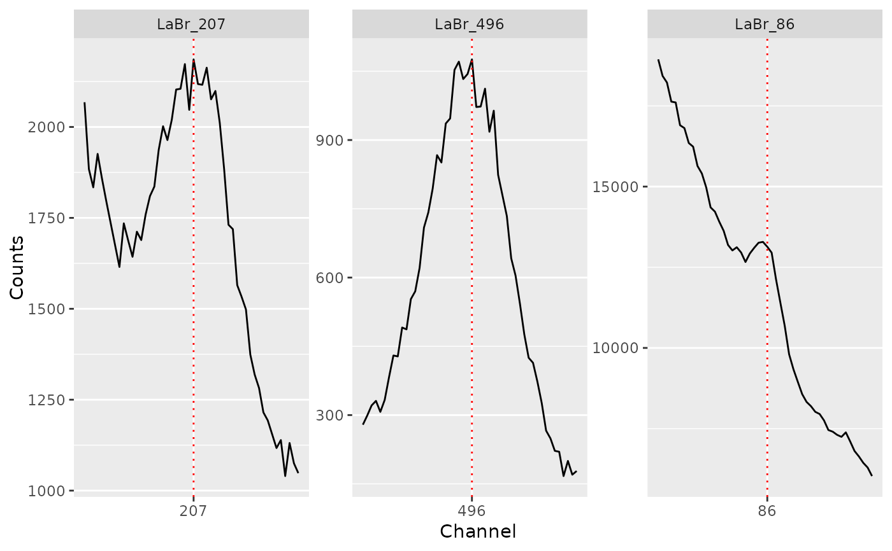
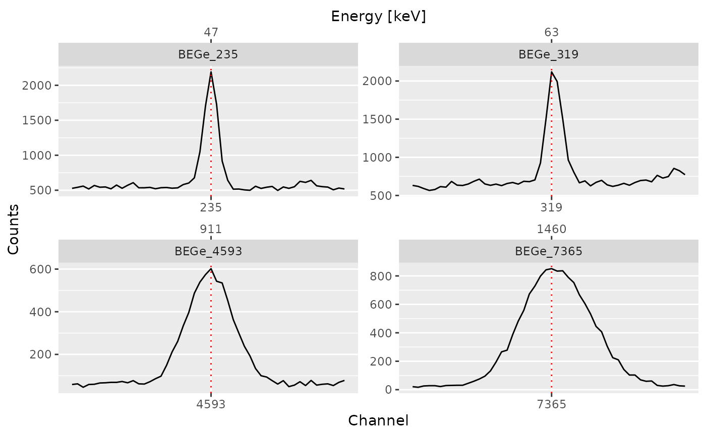

Finds local maxima in sequential data.
Usage
peaks_find(object, ...)
# S4 method for class 'GammaSpectrum'
peaks_find(object, method = c("MAD"), SNR = 2, span = NULL, ...)Arguments
- object
A GammaSpectrum object.
- ...
Extra parameters to be passed to internal methods.
- method
A
characterstring specifying the method to be used for background noise estimation (see below).- SNR
An
integergiving the signal-to-noise-ratio for peak detection (see below).- span
An
integergiving the half window size (in number of channels). IfNULL, 5\ window size.
Value
A PeakPosition object.
Details
A local maximum has to be the highest one in the given window and has to be higher than \(SNR \times noise\) to be recognized as peak.
The following methods are available for noise estimation:
MADMedian Absolute Deviation.
See also
Other signal processing:
baseline,
peaks_search(),
signal_integrate(),
signal_slice(),
signal_split(),
signal_stabilize(),
smooth()
Examples
## Import a LaBr spectrum
LaBr_file <- system.file("extdata/LaBr.TKA", package = "gamma")
LaBr_spc <- read(LaBr_file)
## Find peaks by channel
(LaBr_pks <- peaks_find(LaBr_spc)) # Ugly
#> 2 peaks were detected.
plot(LaBr_spc, LaBr_pks)

## Search peaks by channel
(LaBr_pks <- peaks_search(LaBr_spc, index = c(86L, 207L, 496L), span = 7))
#> 3 peaks were detected.
plot(LaBr_spc, LaBr_pks, split = TRUE)

## Import a BEGe spectrum
BEGe_file <- system.file("extdata/BEGe.CNF", package = "gamma")
BEGe_spc <- read(BEGe_file)
## Search peaks by energy
(BEGe_pks <- peaks_search(BEGe_spc, index = c(47, 63, 911, 1460)))
#> 4 peaks were detected.
plot(BEGe_spc, BEGe_pks, split = TRUE)
